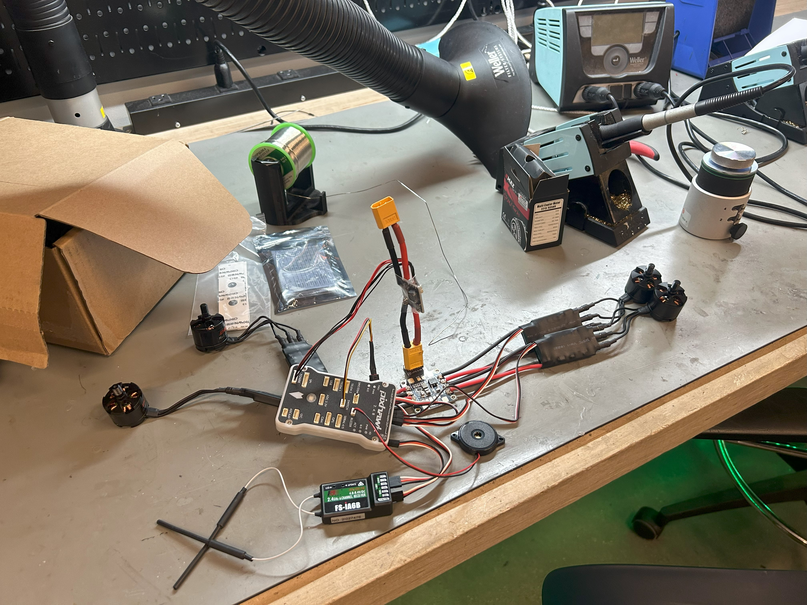
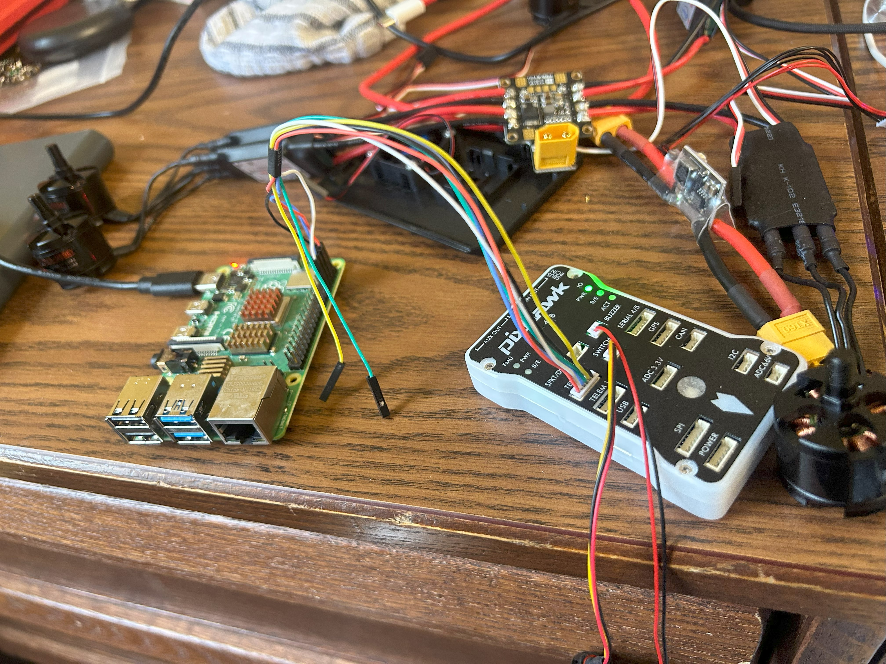
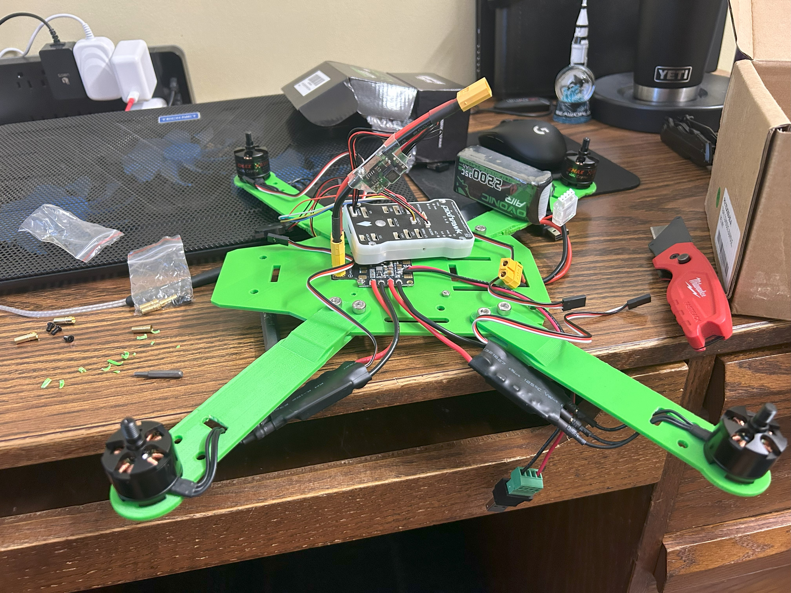
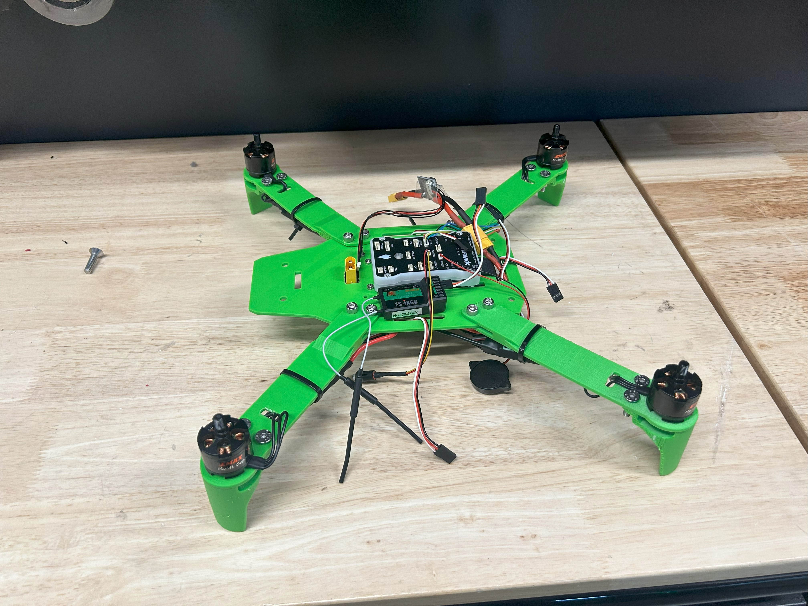
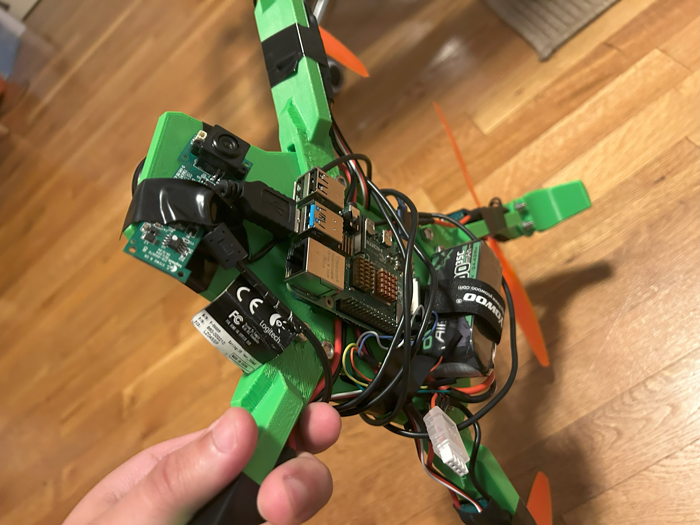
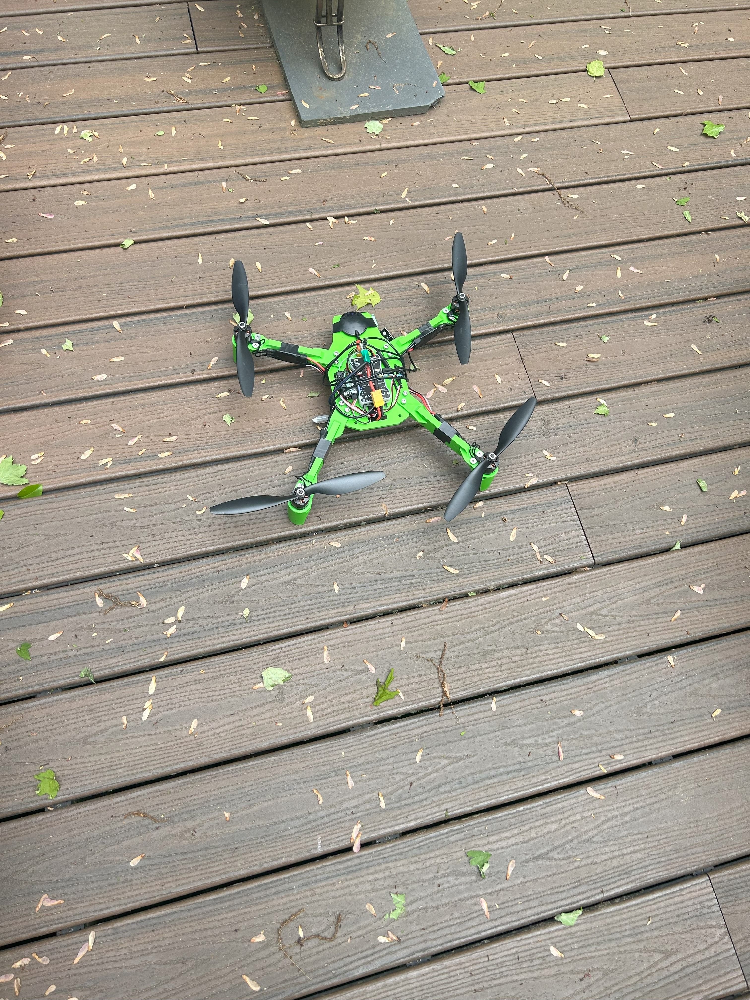

This project is my hands-on exploration of drones and their capabilities. I wanted to grow my skills in many different areas by developing as many components of the drone myself. As such, I designed and fabricated the frame, chose a V-tail configuration, selected and soldered the electronics, built my own ground station module, and wrote Python and C++ programs for both the onboard Raspberry Pi and my laptop.
My passion for drones stems from their blend of mechanical, electrical, and software engineering, offering endless possibilities for innovation. This project was an opportunity to challenge myself by designing and building as many components as possible, fostering a deep understanding of drone systems. My goal was to create a functional, customizable platform that serves as a foundation for future experimentation.
The project began with defining the drone's V-tail configuration, chosen to increase forward flight capabilities and optimize component placement. I used Fusion 360 to design the frame, ensuring structural integrity (after a few iterations and lessons learned) and precise motor placement for balanced flight.


The onboard flight computer, a Raspberry Pi, ran custom Python scripts to manage flight control inputs and sensor data, interfaced with the flight controller via a serial connection. For the ground station, I built a custom box using a Raspberry Pi Pico and HC-12 radio module, paired with Python GCS software I wrote on my laptop for real-time control and telemetry.
Over the course of my iterations, I improved many features as I tested and researched more about drone building. I improved the arm design by moving from a flat arm to a more I-beam shaped design to account for the weakness of PLA. I incorporated a live digital camera feed using a webcam connected to the onboard Raspberry Pi, which streamed over a self-hosted Python Flask server.


I 3D-printed the frame using the Ultimakers at the Invention Studio with PLA filament, iterating on prototypes to address issues like frame cracking and arm bowing. The final frame was lightweight yet robust. I selected and soldered components, including a flight controller, ESCs, and motors onto an off-the-shelf power-distribution board. An issue I faced was working with powerful electronics like LiPo batteries for the first time — I ended up accidentally blowing up an ESC in my dorm, nearly setting off the fire alarm. It quickly taught me to respect the hardware and to be more careful with my procedures.


This project merged mechanical design, electronics, and programming. The V-tail frame's sleek aesthetic was both functional and visually appealing, inspired by Watch Dogs 2. I ended up bringing Kermit back home from college and test flying in my backyard. It went pretty well up until my inexperience flying caused me to hit a branch and come tumbling down. Onward to version 2.